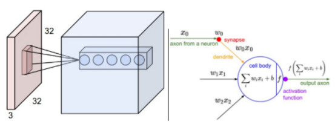

A Byte of NN/CNN/RNN/LSTM/GRU
普通神经网络(Neural Network, NN)、卷积神经网络(Convolutional Neural Network, CNN)、循环神经网络(Recurrent Neural Network, RNN)、长短期记忆(Long Short Term Memory, LSTM)、门控循环单元(Gated Recurrent Unit, GRU)五类神经网络大体的演化过程如下图所示:NN -> CNN -> RNN -> LSTM -> GRU
本文对上述五种类型的神经网络进行简单的介绍：
一、卷积神经网络(Convolutional Neural Network, CNN)
- 一个卷积神经网络由很多层组成，它们的输入是三维的，输出也是三维的，有的层有参数，有的层不需要参数。
- 普通神经网络把输入层和隐含层进行“全连接(Full Connected)“的设计。(缺点：训练过程中的计算非常耗时)
- 卷积运算的目的是提取输入的不同特征，第一层卷积层可能只能提取一些低级的特征如边缘、线条和角等层级，更多层的网络能从低级特征中迭代提取更复杂的特征。
- 通过下图我们清楚地了解到卷积网络和一般网络结构上的差别，也可以理解为卷积神经网络是立体的，而一般的神经网络结构是平面的。
- 卷积层是CNN中最重要的一部分，也是最为创新的一部分。
通过下图中的结构可以清晰地看到卷积网络是怎么实现的:右边是传统的网络结构。左边的图片:首先我们看看图中最左边的结构，为什么是32x32x3的一块立体方块?这个32x32代表的是像素点，也就是图片的大小，这个大小是可以设置的，我们可以设置为50x50，也可以256x256，这都取决于图片的大小。那么3表示什么呢？3其实表示的是RGB的三个通道。任何一张照片都可以用左边这种图形来表示。
左边图片中间的粉色小方块表示什么呢？这个就是要重点讲的卷积。所谓的卷积，就是这种小方块，我们设置一个小方块的大小，但是这个小方块的厚度必须和左边的这个大方块的厚度是一样的，大方块每一个像素点由一个0到255的数字表示，这样我们就可以赋予小方块权重，比如我们取小方块的大小是3x3，我们要求厚度必须要和左边的大方块厚度一样，那么小方块的的大小就为3x3x3，我们就可以赋予其3x3x3个权重，然后我们就可以开始计算卷积的结果，将小方块从大方块的左上角开始，一个卷积小方块所覆盖的范围是3x3x3，然后我们将大方块中3x3x3的数字和小方块中的权重分别相乘相加，再加上一个偏置(bias)，就可以得到一个卷积的结果，可以抽象的写成wx+b这种形式，这就是图上所显示的结果，然后我们可以设置小方块的滑动距离，每次滑动就可以形成一个卷积的计算结果，然后将整张大图片滑动覆盖之后就可以形成一层卷积的结果，我们看到图中的卷积结果是很厚的，也就是设置了很多层卷积。总结来说，每层卷积就是一个卷积核在图片上滑动求值，然后设置多个卷积核就可以形成多层的卷积层。

假设输入数据原来的大小为W*W, Filter的大小是F*F, 步长为S, 卷积操作后的数据的大小为 $\frac{W - F}{S}+1$
池化层:为什么会有池化层的出现呢？是因为不断的做卷积，得到的中间结果会越来越厚，卷积就相当于提取图片中的特征，所以卷积层一般会设置得越来越厚，不然你就无法从前面的结果来提取更多的特征。这样就会导致中间的结果会越来越大，计算会越来越慢，所以提出了池化层。
所谓的池化层，就是将图片的大小缩小的一种处理方式。通过下图，我们可以看到池化层是怎么处理的:池化层也需要先设置一个窗口，但是这个小窗口的厚度是1，而不再是前一层输出的结果的厚度。然后有两种处理方式，一种是取这个小窗口里面所有元素的最大值来代表这个小窗口，一种是取平均值，然后将小窗口滑动，在第二的位置再做同样的处理，上层网络输出方块的每一层做完之后就进入这个大方块的下一层做同样的操作，这个处理办法就可以让整个大方块的大小变小，可以看看下图的左边。右边是一个简单的一层厚度，取最大值的例子。
References
二、循环神经网络(Recurrent Neural Network, RNN)
recurrent 循环的
Recurrent Neural Network(循环神经网络)/Recursive Neural Network(递归神经网络),通常说的RNN指的是循环神经网络
- 多层感知器和卷积神经网络是两种典型的前馈网络，这两种结构有一个特点，就是假设输入是一个独立的没有上下文联系的单位，比如输入是一张图片，网络识别是狗还是猫。但是对于一些有明显的上下文特征的序列化输入，比如预测视频中下一帧的播放内容，那么很明显这样的输出必须依赖以前的输入， 也就是说网络必须拥有一定的”记忆能力”。为了赋予网络这样的记忆力，一种特殊结构的神经网络——循环神经网络(Recurrent Neural Network)便应运而生了.
- RNN 是包含循环的网络，允许信息的持久化。
References
三、长短期记忆(Long Short Term Memory, LSTM)网络
- LSTM 是一种特别的 RNN，可以学习长期依赖信息，比标准的 RNN 在很多的任务上都表现得更好。几乎所有的令人振奋的关于 RNN 的结果都是通过 LSTM 达到的。
- LSTM 通过刻意的设计来避免长期依赖问题。记住长期的信息在实践中是 LSTM 的默认行为，而非需要付出很大代价才能获得的能力
- LSTM 实现了三个门计算: 遗忘门、输入门和输出门。遗忘门负责决定保留多少上一时刻的单元状态到当前时刻的单元状态；输入门负责决定保留多少当前时刻的输入到当前时刻的单元状态；输出门负责决定当前时刻的单元状态有多少输出。
- RNN不能处理距离较远的序列是因为训练时很有可能会出现梯度消失
References
四、门控循环单元(Gated Recurrent Unit, GRU)
- GRU 将忘记门和输入门合成了一个单一的 更新门。GRU保持了LSTM的效果同时又使结构更加简单，所以它也非常流行。GRU模型只有两个门:更新门和重置门。
更新门用于控制前一时刻的状态信息被带入到当前状态中的程度，更新门的值越大说明前一时刻的状态信息带入越多。重置门用于控制忽略前一时刻的状态信息的程度，重置门的值越小说明忽略得越多。
References